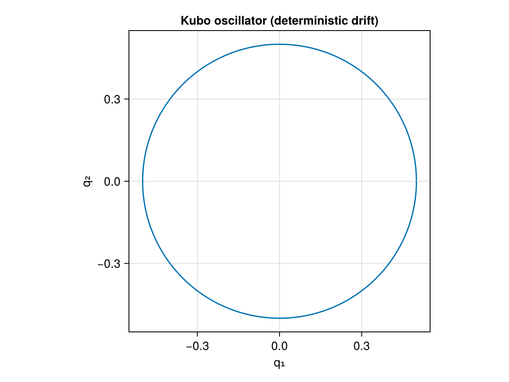

Kubo Oscillator
GeometricProblems.KuboOscillator — Module
Kubo Oscillator
The Kubo oscillator is a unit-frequency harmonic oscillator, $\dot{q}_1 = q_2$, $\dot{q}_2 = -q_1$, driven by multiplicative (Stratonovich) noise. It is a standard test problem for stochastic geometric integrators. The module provides it as a stochastic differential equation (sdeproblem), a partitioned SDE (psdeproblem), a split partitioned SDE (spsdeproblem), and the underlying deterministic ODE (odeproblem). The *problem builders create a single problem from one initial condition; the *ensemble builders (sdeensemble, psdeensemble, spsdeensemble) build an ensemble from several initial conditions. The noise process is represented by KuboNoise.
System parameter: ν — the noise intensity.
The deterministic drift alone (no noise) is a plain harmonic oscillator, tracing a circle in phase space:
using GeometricProblems.KuboOscillator
using GeometricIntegrators: integrate, ImplicitMidpoint
using CairoMakie
sol = integrate(odeproblem(; timespan = (0.0, 2π)), ImplicitMidpoint())
fig = Figure()
ax = Axis(fig[1, 1]; xlabel = "q₁", ylabel = "q₂", aspect = DataAspect(), title = "Kubo oscillator (deterministic drift)")
lines!(ax, sol.q[:, 1], sol.q[:, 2])
fig
Library functions
GeometricProblems.KuboOscillator.KuboNoise — Type
KuboNoise <: AbstractStochasticProcessMarker for the (one-dimensional, unit-intensity Wiener) noise process driving the Kubo oscillator. The GeometricEquations SDE/PSDE/SPSDE API expects a noise object of type AbstractStochasticProcess; the concrete realisation of the increments is supplied by the stochastic integrator.